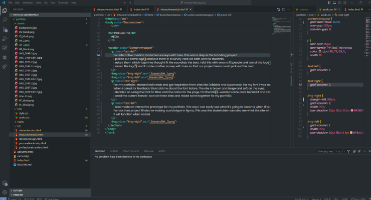
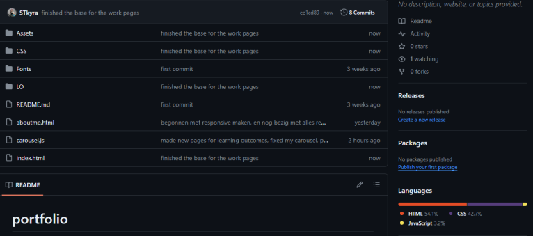
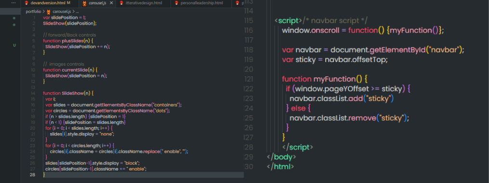

I've been dedicated to advancing my skills in development, and I'm proud to say that my portfolio coding has seen remarkable progress. Setting up a Git repository has been instrumental in organizing and tracking my work effectively. In terms of coding languages, HTML forms the backbone of my project, with CSS handling the styling, and JavaScript adding interactivity where necessary. the JavaScript portion remains relatively minimal, this is because I don't have alot of interactivity.
 In my portfolio repository, I've kept things simple, aligning with my preference for minimalism. That's why I chose to integrate a JavaScript carousel. It's a practical choice, it consolidates my work display, sparing me from creating another page just for my learning outcomes. Plus, let's be honest, carousels add a neat touch and keeps everything organized.
The JavaScript code on the right is designed with clear class and ID names, carefully chosen to simplify coding and improve readability. I've also set up a separate file solely for the carousel feature. Next on my agenda is crafting another JavaScript file to introduce a sticky navigation bar. This segmented method guarantees that each feature is neatly structured, easing maintenance and facilitating future enhancements.
